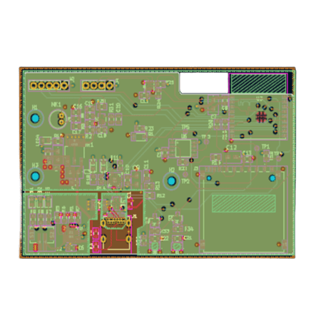

ESP32-C3 IoT 4-Layer PCB Design
On this project I focused on designing a production-style 4-layer PCB around the ESP32-C3 for IoT applications. The board integrates sensor interfaces, power-path and battery backup support, and local data logging to SD card in a compact and practical layout.
Key Features:
- ESP32-C3 Core Design: RF-aware placement and routing for reliable wireless operation.
- IoT Sensors: Integrated environmental sensor modules for measuring temperature, humidity, and other parameters.
- Battery Backup Support: Power section designed for main supply and backup battery operation.
- SD Card Data Logging: SPI-based storage interface for offline logging and diagnostics.
- 4-Layer Stackup: Dedicated routing and reference planes for cleaner signals and power integrity.
Tools Utilized:
- KiCad: Schematic capture, PCB layout, design rule checks, and 3D validation.
